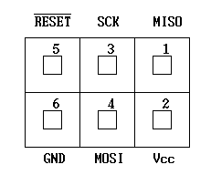

AVRライタ製作集
1999. 10. 3
Last update: 2010. 9. 23

1999. 10. 3
Last update: 2010. 9. 23

最近流行りのAVR用のライタです。様々な使用環境に対応できるように 4つの異なるライタを製作しましたのでご紹介します。
まず、一つはLPTポート接続のパラレルモード対応ライタ、もう一つはLPTポート接続のISPアダプタ、もう一つはCOMポート接続のISPアダプタ、そしてもう一つはCOMポート接続の汎用SPIブリッジです。
LPTポート接続のライタ制御ソフトは各社FPGA用JTAGケーブル(Xilinx, Lattice, Altra)もそのまま流用可能です。また、COMポート接続のものについては、そのままデバッグ用通信ケーブルになってしまうというオマケ付きです :-)
ここで紹介するライタは多くの市販ライタと違い、ライタ側にコントローラを設けずにPCのポートで直接制御をしているのが特徴です。それにより、ライタとの通信などの余計なオーバーヘッドが無くなり、プログラミング時間の大幅な短縮を実現しています。しかし、このように独自仕様なので、AVR Studioからは直接使えません。いや、とりあえず使えることは使えますが...。また、WinAVRではmakeで使うこともできます。
AVRには主に2つの異なったプログラミングモードがあり、用途に応じて使い分けます。一つはパラレルプログラミングモード（以下パラレルモード）といい、ライタのソケットに載せてパラレルでデータやコマンドをやりとりする方法です。パラレルロードなので、プログラミング速度は次に述べるISPモードに比べて倍以上と高速です。大量のデバイスのプリライトや、ボードの設計上ISPが不可能な場合に使用します。市販のライタでパラレルモードに対応しているのは、STK500 (Atmel)だけのようです。
もう一つは、シリアル信号でやり取りするモードで、シリアルダウンロードモード(以下ISPモード)といいます。このモードでは 3本のロジックレベルの信号だけでコマンドやデータをやりとりして書き込みます。必要な信号線数が少なく、+12Vのプログラミング電圧も必要無いので、単純なインターフェースで回路に組み込んだ状態でプログラムできます。これはいわゆるISP(In-System Programming) と言われている方法です。ただ、ISPモードの無いデバイスがあったり、ISPモードでは一部の機能を変更できないデバイスがあるので、そのような場合はパラレルモードを使わなければなりません。しかし、市販のソケット式AVRライタはどういうわけかISPモードを使用しているものが殆どで、これらの問題が避けられないので注意が必要です。
さらにもう一つ、プログラミング電圧を加えてシリアルで書き込む高電圧シリアル(HVS)モードがあります。これは、ピン数の関係でパラレルモードの不可能な 8/14ピンデバイスでのみサポートされる方式で、機能的にはパラレルモードと等価です。それぞれのプログラミングモードの詳細については、データシートを参照してください。
右の図に製作したパラレルライタを示します。チップ部品を多用してコンパクトに組み上げています。回路が単純な割には、パラレルモードとHVSモードにちゃんと対応しています。パラレルライタは次のような場合に必須になってきます。
このようにパラレルライタがどうしても必要になる場面は限られてくるので、普通はISP方式だけで十分です。でも、8ピンAVRに関してはHVSモードで書き込めないと何かと不便なので、8ピン専用HVSライタも用意してみました。
デバイスマウント用のソケットには 20pinの ZIFソケットを使ったので、20ピン以外のデバイス(8,28,40)に書き込む場合は変換アダプタを使用する必要があります。パソコンによってはパラレルポートのHレベル出力電圧が3.5V以下のものがありますが、このような場合、回路図中の破線部に74HCT541等を追加してレベル変換する必要があります。これらのライタの制御には、AVRXP.COM(DOS版)またはAVRPP.EXE(Win32版)を使用します。
これは、コストダウンと再現性(誰でもすぐ作れる)を狙った物です。回路図に示す簡易版は能動部品は使用せず、単純に LPTポートの入出力をISPコネクタに直結するようになっています。このように非常に単純なため、10分もあれば組み立てられると思います。部品もジャンク箱を漁れば出てくるようなものだけです。AVRを試してみる準備としては、これが一番安上がりでしょう。しかし、簡易版アダプタは信号レベル変換をしていない（ターゲットに合わせていない）ため、ターゲットの電源電圧は約4.5〜5.5Vの範囲という制限が付いたり、一部のPCでは動作が不安定になったりしてしまいます。
また、制御プログラムはオリジナル回路のほか、STK200 ISP dongleや各社CPLD/FPGA用のダウンロードケーブルを自動認識してそのままAVRの書き込みに使えるようになっています。現在対応しているのは、Xilinx、Lattice、Alteraのアダプタです。アダプタのJTAG信号とAVRとの対応は、TDO-MISO、TDI-MOSI、TCK-SCK、TMS-RESETとなります。バッファ付きの場合、使用可能な電源電圧の範囲は3〜5V程度と広くとれます。これらのアダプタの制御には、AVRSP.EXE(Win32版)を使用します。
これは、COMポートで制御するタイプの ISPアダプタです。RS-232Cの信号電圧レベルをターゲットシステムに合わせるためゲートICを使ってレベル変換していますので、2.2〜5.5Vのターゲット電源で使用可能です。また、この ISPアダプタはホストPCとターゲットの通信ケーブルとしても使えます(後述)。普通のAVRシステムの開発にはこれだけあればとりあえず十分でしょう。
この ISPアダプタはスイッチでISPアダプタをターゲットから論理的に切り離すことができます。このため、書き込むたびにISPコネクタを抜き差しする手間が省けます。
製作する際は、写真のようにレベル変換回路をターゲット寄りに置く方が動作の安定や取り扱いの点から好ましいです。ISPケーブルは何本か製作してこの形に落ち着きました。このISPアダプタの制御には、AVRSP.EXE(Win32版)またはavrdude 5.1以降を使用します。
最近はレガシィポート(COM/LPT)を持つPCがかなり少なくなり、特にノートPCにおいてはほぼ全滅状態です。これに代わるのが今は当たり前のように装備されているUSBです。今回は、USB用の汎用SPIブリッジを製作してみました。単にUSB-UARTブリッジを追加しただけで、新規設計といえるようなモノではありませんが...(汗)。もちろん、全く同じでは面白くないので、使用デバイスを新しいのに置き換えたり、性能が出やすいようにavrsp側でバッファサイズを調整したりしています。SPIブリッジR4以降ではAVR専用コマンドの追加により、COMポート直接I/O叩きの2倍程度の速度が実現できました。
右の写真に製作したSPIブリッジを示します。MLF品を使ったため、46/15/6(L/W/T)とUSBメモリを一回り小さくしたサイズに収まりました。電源は、「ターゲットから供給(3〜5V)」と「ターゲットに5V/3.3Vを供給(ターゲット側の条件によっては不可)」を選択できるようになっています。これにより、ノートPCさえあれば電源なしでの書き換え・デバッグ(たとえば、マイコン野郎＠通勤電車など)も可能になります。
汎用ブリッジと言うくらいなので、AVRの書き込みに限らずSPIデバイス全般(Mode0に限る)に使用可能です。例としてSDメモリカードを接続してセクタダンプする実験を示します。もちろん、ポート直結タイプのISPアダプタでもSPI制御部を変更すれば同様に使用できます。 2007. 9. 8
それぞれのプログラムの使用方法は、アーカイブに同梱のマニュアルを参照してください。これらの制御プログラムの特徴は、デバイスタイプを全て自動認識して各デバイスに合った動作ができることです。これにより、ユーザはデバイスタイプを意識せずに、必要なHEXファイルをまとめて投入してやるだけでよいので、操作がとても簡単です。どれもコンソールアプリですが、.iniファイルを適当に設定してやれば、D&Dで一発書き込みができるようになります。
パラレルライタについては、手動操作で動作チェックできるチェックプログラム(DOS版のみ)も用意してあります。ISPライタについては、avrsp -z でSCKラインにテストパルスを出力してシステムの互換性チェックができます。

ISPで使用する場合は、ターゲットボードもそれに合わせた設計とする必要があります。ISPに必要なピン（RESET, SCK, MISO, MOSI）を常に開けておければ良いのですが、それでは実際の応用でポート数が不足してしまうことがあり ISP動作ができないこともあります。でも、条件付きで ISP機能と I/Oポートとしての機能を共用することもできます。
ISP動作に関する端子を I/Oとして使用する場合は、次のような注意が必要で、それらを守っておけば ISPピンを I/Oとしても使用できます。
これは、アトメルの推奨する ISPコネクタのピン配置で、6ピン(3×2)、2.54mmピッチのピンヘッダを使用することになっています。ISPケーブルの製作や、ターゲットボード側の ISPコネクタはこれを基準にすると良いでしょう。このほか10ピン仕様もあります。
基板をぎっちりに作ってしまって ISPコネクタを付けるスペースが無い、または ISPコネクタを付けるのがめんどいという場合は、右の写真に示すようなクリップで ICを直接挟み込んで接続することもできます。

これは、COM接続ISPアダプタ(SPIブリッジ)の目玉的機能で、信号線の使い方をちょっと工夫することにより、ISPケーブルを使ってホストPCとターゲットプログラムとの間で通信ができるようになっています。つまり、ISPケーブルと適当なターミナルソフトを使ってそのままリモートコントロールができてしまうのです。ISPアダプタをOFFにしている時でもMISOはパソコン側でモニタできるので、単なるprintfデバッグも可能です。この機能を実現するには、ターゲット側では次のような条件を満たさなければなりません。
最近、PIC24Fをはじめとする16ビット・アーキテクチャのPICマイコンが容易に入手できるようになってきました。普段AVRをメインに使っていても「これは面白そうだゾ」と惹かれる方も多いと思います。そこで、AVR用のISPケーブルでPICマイコンに書き込めるようにしてみました。PIC24Fも試食してみたいけど、書き込みが...という場合に最適かと思います。
書き込みプログラムpic24spの機能・使い方はavrspと同じで、対応デバイスはPIC24F/PIC24H/dsPIC33Fです。SPIブリッジを使う場合はR3以降が必要です。PICの書き込みにはPIC24SP.EXE(Win32版)を使用します。現在のところ8ビットPICには対応していませんが、LV-ICSP対応デバイスならpic24spの改造で対応できるはずです。dsPIC30Fなど高電圧が必要なデバイスは残念ながら対応不可です。
COMポート接続ではAVR同様にISPケーブル経由の通信(printfデバッグ等)が可能ですが、1本のデータ線で往復のソフトウェアUART通信を行うことになるので、ターゲット側からの送信はPGDラインをマーク=Hi-Z/スペース=Highで駆動する必要があります。 2007. 12. 10


{kind=link}
{kind=link}
{kind=link}
{kind=link}
{kind=link}
{kind=link}
{kind=link}
{kind=link}
{kind=link}
{kind=link}
{kind=link}
{kind=link}
{kind=link}